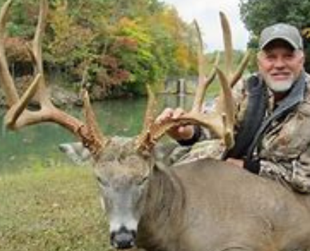

McBee Hunting
Why you should Hunt with us?
Have you ever wanted to shoot a booner of a whitetail? Well with McBee Huning you will get once in a lifetime hunting experience. We welcome any hunter no matter the age. We offer to the youth, men, and women. Bring your family and friends and make lifetime long memories on a Northern Missouri Hunting adventure with us at McBee Hunting.
WARNING!!
We follow all the Missouri Hunting rules. Hunting with us you will need to provide a Missouri Hunting license to hunt with us!!